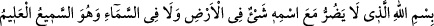
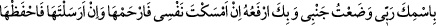
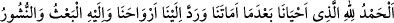

Onlarda sünnetten bir eser göremezsin
Erken uyumak ve seherde yemek yeme dışında
Abdestli olarak uyumak uyku âdâbındandır. Hz. Peygamber (s.a.): “Kim
temiz/abdestli olarak gecelerse gömleğinde bir melek geceler. Gecenin bir saatinde
uyandığında melek: “Allâh’ım falan kulunu bağışla. Çünkü o temiz/abdestli olarak
geceledi.” diye duâ eder.”[24]
İnsan devamlı olarak abdestli olabiliyorsa bunu yapsın. Çünkü abdestli olarak ölen
şehid olmuş olur. İlk yattığında sağı üzere kıbleye dönerek yatmak müstehabdır. Diğer
tarafa dönmeyi uygun görürse döner. Yattığı zaman şöyle der:
“__WORD__
(İsmiyle beraber yerde ve gökte hiçbir şeyin zarar veremeyeceği Allâh’ın adıyla. O
herşeyi işiten ve bilendir.)”[25]
Hz. Peygamber (s.a.) yatarken şöyle buyururdu:
“__WORD__
(Rabbim senin adınla yanımı yatağa koydum. Senin sâyende de yataktan kaldırırım.
Canımı tutup alıkoyacak olursan ona merhamet et. Gönderirsen o zaman da
muhâfaza et.)”[26]. Uykusundan kalktığında da:
“__WORD__
(Bizi öldürdükten sonra hayat veren ve ruhlarımızı bize geri çeviren Allâh’a hamd
olsun. Yeniden diriltilme ve dönüş O’nadır.)”[27] derdi.
Yine bilesin ki uyku ve uyanıklık hâli, gaflet ve basiretin uyanıklığına işârettir.
Uyanıklık vakti, işin başında kalbin uyanma vakti gibidir. Sonra abdest almak için
hareket etmek tevbe ve inâbeye işârettir. Namazın ilk tekbîri, ilâhî teveccühe işârettir.
Kişinin uyandıktan ilk tekbire kadar olan hâli mülk âleminden, yâni nâsûttan geçip
melekût âlemine girmesine işârettir. Sonra rükûya gitmek, kişinin ceberût âlemine
geçmesine işârettir. Secdeye gitmek kişinin lâhût âlemine, yâni küllî fenâ makamına
ulaşmasına işârettir. İşte o zaman kişinin aslî vatanına küllî suûdu/yükselişi meydana
gelir. Secdeden kalkmak bakâ hâline işârettir. Çünkü bu geriye dönüştür. Urûc sûretinde
nüzûl olduğu gibi nüzûl sûretinde de urûc vardır. Rükû, “kabe kavseyn” makamıdır. O
ise sıfatlar makamı, yâni zât-ı vâhidiyyettir. Secde ise “ev-ednâ”, yâni zât-ı ahadiyyet
makamıdır.
Altı hareket, yâni kıyamdan rükûya, sonra ondan kavemeye, sonra ondan birinci